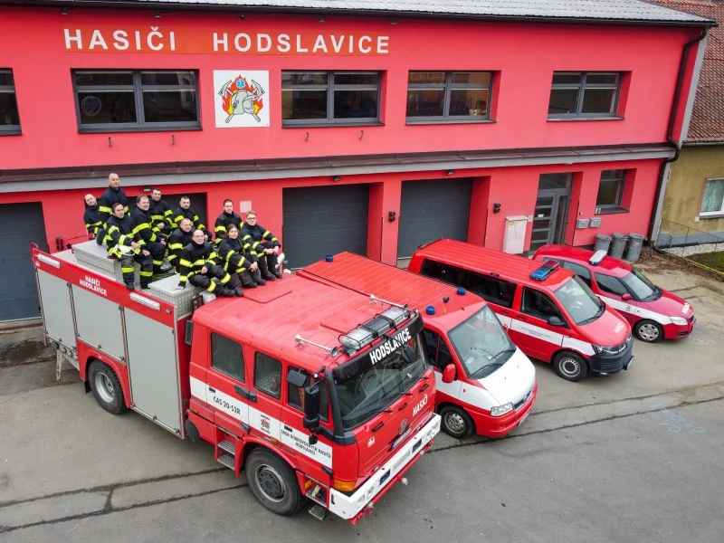

JPO IIIZaloženo 1883
Hasiči Hodslavice
Informace o sboru, výjezdové jednotce, mladých hasičích a akcích v obci.
Informace
Co hledáte?
Nejdůležitější části webu bez zbytečného hledání.
Kalendář
Akce během roku
Přesné termíny a program se mohou každý rok měnit.
Únor
Hasičský ples
Kulturní dům Hodslavice
Červenec
Letní večer
Hasičská zbrojnice Hodslavice
Listopad
Halloween party pro děti a dospělé
Komunitní akce v Hodslavicích
Prosinec
Vánoční prodej kaprů
Hodslavice
SDH Hodslavice
Součást obce od roku 1883
Vedle zásahové činnosti se věnujeme práci s mládeží, pořádání akcí a pomoci v obci.


Hodslavice 102